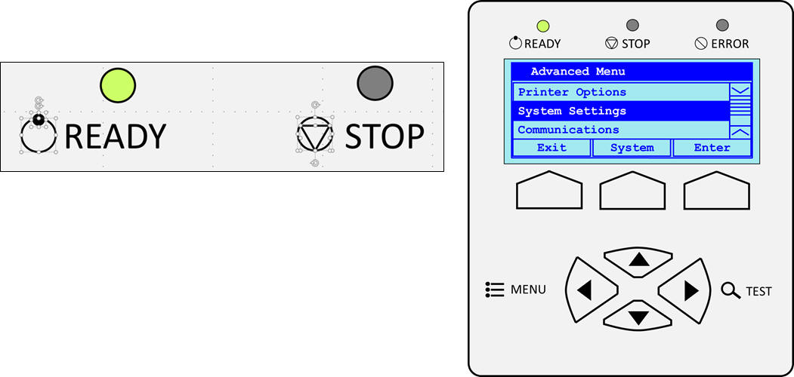

Vector images in the Microsoft PowerPoint
Why is the Microsoft PowerPoint
How to paint?
Result:

How correctly insert images created PowerPoint in Microsoft Word?
1. Copy your painted image into the clipboard.
2. Open the Microsoft Word.
3. Click Paste -> Use the Special insert function -> Choose PNG